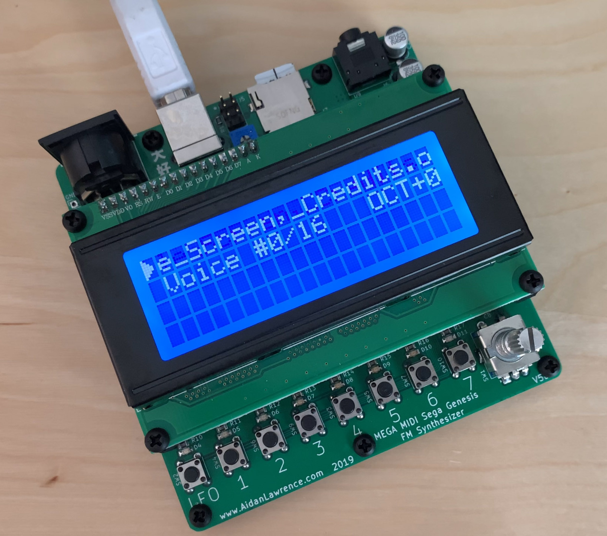

MIDI-compatible Sega Genesis/Megadrive Synthesizer with REAL sound chips.

The Mega MIDI is not an emulator. This is the real deal. Both the genuine YM2612 and the SN76489 PSG sound chips are on-board. Further still, the patches are not recreated “sound-alikes” either. They are one-for-one instruments with identical settings to those found within their parent games. You are playing the actual patches on authentic hardware.
All DB data
- Name: Mega MIDI
- Author: Aidan Lawrence
- Link: https://github.com/AidanHockey5/MegaMIDI
- Demo: https://www.youtube.com/watch?v=GjcnrMy_QiQ
- Picture: ../pics/mega-midi.jpg
- Description: MIDI-compatible Sega Genesis/Megadrive Synthesizer with REAL sound chips.
- Notes: The Mega MIDI is not an emulator. This is the real deal. Both the genuine YM2612 and the SN76489 PSG sound chips are on-board. Further still, the patches are not recreated “sound-alikes” either. They are one-for-one instruments with identical settings to those found within their parent games. You are playing the actual patches on authentic hardware.
- Artifacts: {“Schematic”=>true}{“PCB”=>true}{“BOM”=>true}{“FW”=>true}{“Docs”=>false}{“Enclosure”=>false}
- Tags: AVRPolyphonicDigitalChiptuneKitMIDI
- Level: Intermediate
{kind=link}